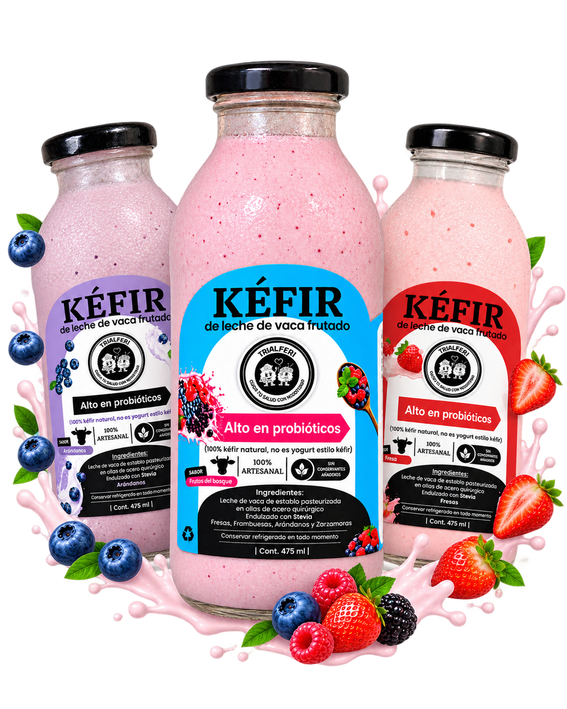
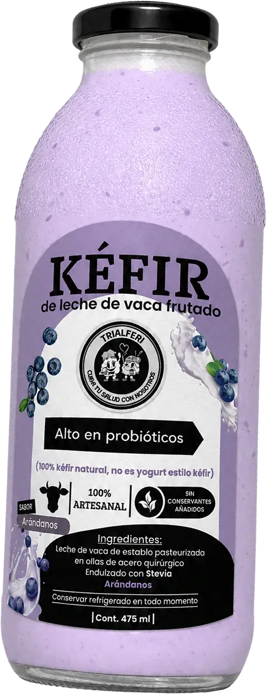
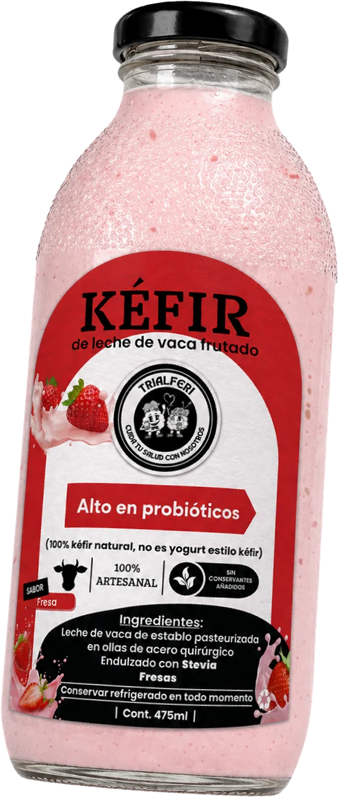

ESTEDOMINGO25
DEGUSTACIÓN GRATIS
en Biotienda VerdeRaíz


KÉFIRKÉFIR
de frutos del bosque
Endulzado con stevia

4 frutos en 1 botella

KÉFIRKÉFIR
de vaca o de cabra
Pasteurizado en ollas de acero quirúrgico0% de azúcar añadida100% kéfir natural, no es yogurt estilo kéfir

Libre pastoreo
Leche de establo
¿Primera vez con kéfir?
- 1Empieza con un shot de 30 ml
- 2En ayunas
- 3Aumenta poco a poco
30 ml

KÉFIRKÉFIR
¿Lo prefieres con fruta?
SABORFresa
SABORArándanos
SABORChocolate
con pulpa natural
con pulpa natural
con cacao de Quillabamba
Endulzado con stevia


100% artesanales
sin conservantes añadidos
Hecho a mano, lote a lote

¡VEN AGRATISPROBARLOS!
DOM
25
OCTUBRE
DEGUSTACIÓN
🕘 8:30 a. m. – 1:00 p. m.
Sin compromiso
TRIALFERI
ESTAMOS EN
📍DÓNDE
C.C. UNICACHI
Tienda 77 · Comas
Ref.: Mall de Comas
PEDIDOS
942 469 453
WhatsApp · @bioverderaiz




DEGUSTACIÓNGRATISDOM 258:30 a. m. – 1:00 p. m.
🥄 DEGUSTACIÓN GRATIS · DOM 25 OCT